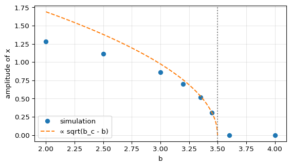

Hopf Bifurcation
Module 1: Low-Dimensional Dynamics
In a Hopf bifurcation a fixed point changes stability because a pair of complex conjugate eigenvalues crosses the imaginary axis. A limit cycle appears or disappears at the same time. It is the standard way in which an oscillation is born as a parameter varies (Strogatz 2024, sec. 8.2).
Normal forms
In polar coordinates, the prototype of a supercritical Hopf bifurcation is
\[ \dot r = \mu r - r^3, \qquad \dot\theta = \omega + b r^2 . \tag{1}\]
- \(\mu < 0\): the origin is a stable spiral.
- \(\mu > 0\): the origin is an unstable spiral, surrounded by a stable limit cycle of radius \(r = \sqrt{\mu}\).
The eigenvalues at the origin are \(\lambda = \mu \pm i\omega\). Near the bifurcation the amplitude grows like \(\sqrt{\mu}\) and the period is close to \(2\pi/\omega\) (Strogatz 2024, sec. 8.2).
In the subcritical case the cubic term is destabilizing, for example \(\dot r = \mu r + r^3 - r^5\). An unstable cycle shrinks onto the fixed point as \(\mu \to 0^-\). At \(\mu = 0\) the state jumps to a distant, large-amplitude attractor, and the oscillation persists when you decrease \(\mu\) again: another form of hysteresis (Strogatz 2024, sec. 8.2).
The linearization only tells you that eigenvalues cross the axis. Whether the bifurcation is supercritical or subcritical depends on the nonlinear terms. In practice you often decide it numerically, by checking whether a small limit cycle appears on the unstable side (Strogatz 2024, sec. 8.2).
Worked example: the CDIMA reaction
The chlorine dioxide-iodine-malonic acid reaction oscillates in a stirred reactor. Lengyel and Epstein proposed a two-variable model for it (lengyel1991modeling?); in dimensionless form (Strogatz 2024, sec. 8.3)
\[ \dot x = a - x - \frac{4xy}{1 + x^2}, \qquad \dot y = b x\left(1 - \frac{y}{1 + x^2}\right), \tag{2}\]
where \(x\) and \(y\) are the dimensionless concentrations of I\(^-\) and ClO\(_2^-\) and \(a, b > 0\).
Fixed point. The \(y\)-nullcline (for \(x > 0\)) is \(y = 1 + x^2\). Substituting in \(\dot x = 0\) gives \(a - 5x = 0\), so the unique fixed point is
\[ x^* = \frac{a}{5}, \qquad y^* = 1 + (x^*)^2 . \]
Jacobian. At the fixed point,
\[ J = \frac{1}{1 + (x^*)^2}\begin{pmatrix} 3(x^*)^2 - 5 & -4x^* \\ 2b(x^*)^2 & -bx^* \end{pmatrix}, \qquad \Delta = \frac{5bx^*}{1 + (x^*)^2} > 0, \qquad \tau = \frac{3(x^*)^2 - 5 - bx^*}{1 + (x^*)^2}. \]
Since \(\Delta > 0\), the fixed point is never a saddle. It is unstable when \(\tau > 0\), that is when
\[ b < b_c = \frac{3a}{5} - \frac{25}{a} . \tag{3}\]
This is the condition in Strogatz (2024), Section 8.3. At \(b = b_c\) the eigenvalues are \(\pm i\omega\) with \(\omega^2 = \Delta\). For \(b < b_c\), Strogatz constructs a trapping region and applies the Poincaré-Bendixson theorem to prove that a closed orbit exists.
The amplitude goes to zero continuously as \(b \to b_c\), close to the \(\sqrt{b_c - b}\) law. This is the signature of a supercritical Hopf bifurcation for these parameters. In the lab you will check Equation 3 with a numerical Jacobian (CDIMA: Stability and the Hopf Point).
Exercise
For \(a = 10\), compute \(b_c\) and the period of small oscillations near the bifurcation.
Solution
\(b_c = 6 - 2.5 = 3.5\) and \(x^* = 2\). Then \(\omega^2 = \Delta = 5 \cdot 3.5 \cdot 2 / 5 = 7\), so \(\omega = \sqrt 7 \approx 2.65\) and the period is \(T \approx 2\pi/\sqrt 7 \approx 2.37\) dimensionless time units.
Next
Session 8 implements this analysis.
References
Strogatz, Steven H. 2024. Nonlinear Dynamics and Chaos: With Applications to Physics, Biology, Chemistry, and Engineering. Chapman; Hall/CRC.